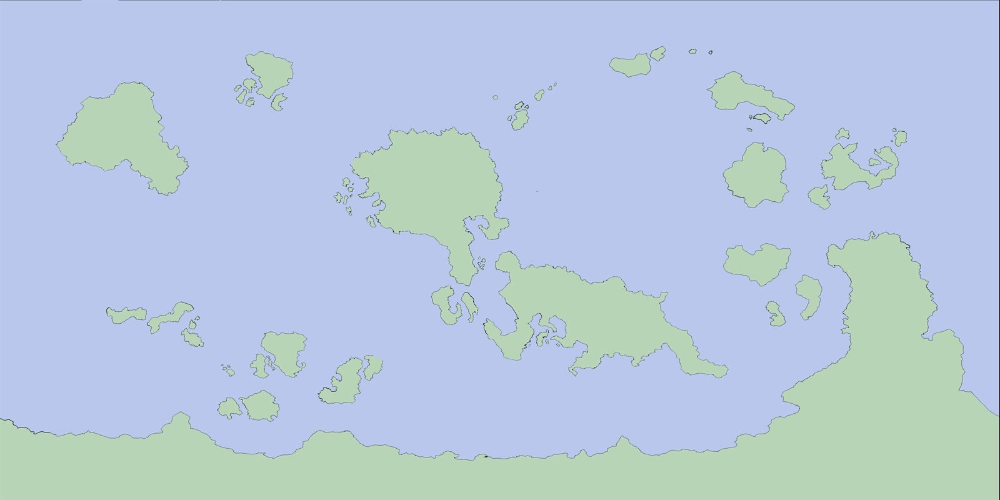

Materialidade
Em primeiro lugar, este é um mundo físico. Frio, fome, ferida e tempo pesam como pesariam no mundo real. Tudo o que é sobrenatural é exceção a essa base, não substituição dela.
Um cenário de RPG livre de sistema
Adamar é um mundo brutal e simples.
Brutal porque o frio importa, a fome enfraquece, e um corte mal cuidado deixa marcas que ficam. Não há heróis invulneráveis, nem cura que cabe num frasco, nem lanternas que duram para sempre. As pessoas envelhecem, adoecem e têm medo do escuro por motivos reais.
O que é
Simples porque, fora isso, é um mundo como o nosso. As pessoas trabalham a terra, se reúnem em volta do fogo, contam histórias, brigam por bobagens, se apaixonam, criam filhos, levantam vilas e festejam quando a colheita chega. A vida acontece entre uma colheita e outra, entre uma partida e um retorno.
A magia existe, mas é rara, temida, frequentemente confundida com superstição. Um mago que solta uma bola de fogo não é o protagonista de uma fantasia colorida: é um boato que atravessa povoados e gera mais medo do que admiração. Os deuses talvez ouçam, ou talvez não. Os monstros das lendas existem em algum canto, mas a maior parte das pessoas nunca chega perto de descobrir.
É um mundo que se parece com a realidade física antes de se permitir qualquer fantasia. Mas se permite.
Como o mundo funciona
Seis conceitos sustentam toda a metafísica de Adamar. Quem entende esses, entende como qualquer coisa pode ou não acontecer no mundo.
Em primeiro lugar, este é um mundo físico. Frio, fome, ferida e tempo pesam como pesariam no mundo real. Tudo o que é sobrenatural é exceção a essa base, não substituição dela.
A energia do espaço entre os mundos, manipulada por raros indivíduos com o dom. Temida e escassa, e usá-la em demasia num mesmo lugar enfraquece a barreira.
Adamar é apenas um entre infinitos mundos sobrepostos, separados por uma barreira de espessura variável. É no espaço entre eles que mora a magia arcana.
Seres de outros mundos que rompem a barreira para alcançar Adamar. Suas motivações vão da fome de magia e da sede de domínio à vontade de ajudar.
Antigas fortalezas e templos onde a barreira é naturalmente fina. Fontes de magia, prisões ou cofres trancados: lugares quase vivos, em mutação constante.
Forças incompreensíveis ligadas aos seus domínios. Sua existência é decisão do narrador. Quando agem, agem através de mortais, concedendo magia divina a quem é digno.
Três momentos do mesmo mundo
Adamar pode ser jogado em três momentos diferentes. Cada um atende um tipo distinto de campanha e de jogador.
Cenário padrão
Cerca de duzentos anos após os antigos reinos chegarem a Roestia, fugindo da Praga Vermelha. O continente é jovem, e por toda parte há ruínas que ninguém reconhece. A Primeira Lua Negra marca a primeira grande incursão documentada de forasteiros. É a era do desbravamento, do mistério e do perigo que se aproxima.
O futuro utópico. Quinhentos anos depois da guerra que pôs fim às invasões, a barreira foi restaurada, os forasteiros malignos foram expulsos e os amigáveis, acolhidos. O cenário mais próximo da fantasia clássica: um Adamar onde o bem venceu.
O oposto. Séculos após a Primeira Lua Negra, o mundo lá fora deixou de ser habitável. Os últimos sobreviventes vivem em cavernas, masmorras e minas, e a magia virou ferramenta de sobrevivência. A era dos refugiados e dos cultos isolados.
Personagens
Roestia, o continente onde tudo se passa, é parte de um mapa pensado para ter cerca de 60% do tamanho da Terra. Há geleiras, desertos, florestas tropicais, estepes, arquipélagos, montanhas que ninguém atravessou, costas que ninguém mapeou.
Por isso, qualquer arquétipo cultural humano cabe em Adamar.
Um samurai de uma ilha distante, um cavaleiro de armadura pesada dos reinos de Roestia, um guerreiro do deserto, um caçador das geleiras, um viking de costa fria: todos têm lugar. O cenário só pede coerência. A tecnologia para no nível medieval, a magia segue suas regras, e o personagem precisa fazer sentido no mundo. Dentro disso, há liberdade quase total.

Para ir mais fundo
O mapa de Adamar e o continente de Roestia.
As definições que dizem como o mundo funciona: o que pode e o que não pode acontecer.
Textos de dentro do mundo: o Mito da criação, a Praga Vermelha, a Vinda para Roestia.
A cronologia do cenário, do mito da criação ao presente.
A playlist tema de Adamar, para tocar à mesa.
A pasta temática de referências visuais do cenário.
Ruínas de Adamar
O frio, a fome e as ruínas esperam. Falta você.
Jogar